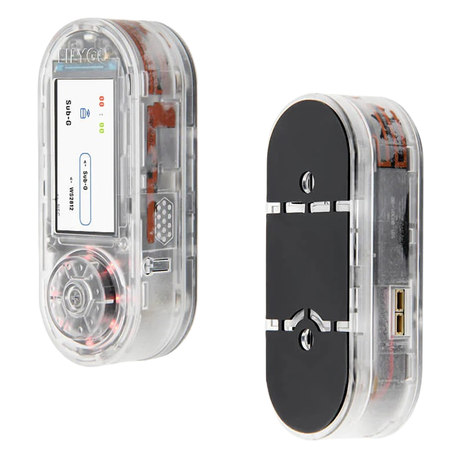
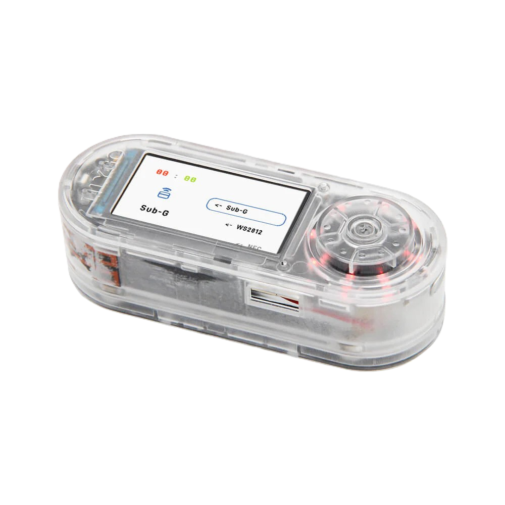
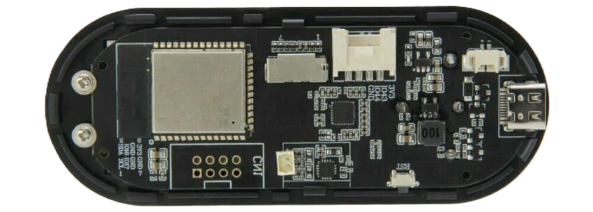

Mini guía de ciberseguridad:
Auditoría IoT de Bolsillo
Mini guía definitiva para la investigación de seguridad en redes inalámbricas. Compacta. Potente. Sigilosa.
DESCUBRIR HARDWARE
¿De qué va esta guía?
Esta es una mini guía sobre auditoría de seguridad en redes inalámbricas usando hardware de bolsillo. En concreto, vamos a hablar del LilyGO T-Embed con ESP32-S3, un dispositivo pequeño y barato que, con el firmware correcto, se convierte en una herramienta muy potente para hacer pruebas de penetración en WiFi, Bluetooth y radiofrecuencias Sub-GHz.
La guía está dividida en tres partes principales:
- El Hardware: Qué componentes lleva y por qué son importantes
- El Firmware: El software que le da vida al dispositivo
- Los Ataques: Qué se puede hacer con todo esto (WiFi, Bluetooth, Sub-GHz)
A continuación vamos a desglosar los componentes principales del dispositivo para entender cómo funciona por dentro. Empezamos por el cerebro del sistema: el chip ESP32-S3.

Hardware del Dispositivo
1. Microcontrolador ESP32-S3
El ESP32-S3 es un SoC (System on Chip) de última generación fabricado por Espressif Systems. Se trata de un microcontrolador de doble núcleo basado en la arquitectura Xtensa LX7 de 32 bits, con una frecuencia de reloj de hasta 240MHz.
Especificaciones Técnicas:
- CPU: Dual-core Xtensa LX7 a 240MHz con capacidad de procesamiento vectorial
- Memoria RAM: 512KB SRAM interna para datos y programas
- Memoria Flash: Soporta hasta 16MB de memoria flash externa
- Conectividad WiFi: IEEE 802.11 b/g/n en banda de 2.4GHz, con soporte para WPA/WPA2/WPA3
- Bluetooth: Bluetooth 5.0 (LE) con Bluetooth Mesh y alcance extendido
- Periféricos: 45 GPIO programables, SPI, I2C, UART, ADC de 12 bits, DAC, PWM
Ventajas para Seguridad Inalámbrica:
El ESP32-S3 integra las capacidades de comunicación inalámbrica directamente en el chip, lo que permite interceptar, analizar y transmitir señales WiFi y Bluetooth sin necesidad de hardware adicional. Su arquitectura de doble núcleo permite ejecutar tareas de monitorización y procesamiento en paralelo, fundamental para ataques en tiempo real.
2. Placa LilyGO T-Embed
La placa LilyGO T-Embed es una placa de desarrollo compacta específicamente diseñada para aplicaciones IoT y proyectos de seguridad portátiles. Integra el ESP32-S3 junto con múltiples periféricos que la convierten en una plataforma autónoma para pentesting inalámbrico.
Pantalla LCD Integrada
- Tipo: TFT LCD a color de 1.9 pulgadas
- Resolución: 170×320 píxeles
- Controlador: ST7789V con interfaz SPI
- Función: Visualización de menús, resultados de escaneos, captura de paquetes y estado del sistema en tiempo real
La pantalla permite operar el dispositivo de forma autónoma sin necesidad de conectarlo a un ordenador, ideal para auditorías en campo.
Control de Usuario
- Encoder Rotatorio: Permite navegación rápida por menús con pulsación integrada para selección
- Botones Físicos: 2 botones programables para acciones rápidas
- LED RGB: Indicadores de estado visual (escaneo activo, ataque en curso, etc.)
La interfaz física está optimizada para uso con una sola mano, facilitando operaciones discretas.
Gestión de Energía
- Batería: Conector JST para baterías Li-Po de 3.7V (300-1000mAh)
- Carga: Circuito de carga integrado vía USB-C
- Autonomía: Entre 2-6 horas según uso (escaneo pasivo vs ataques activos)
- Regulador: Regulador de voltaje de 3.3V para alimentación estable
La autonomía permite realizar auditorías completas sin depender de fuentes de alimentación externas.
Expansión y Conectividad
- Puertos GPIO: Acceso directo a pines I2C, SPI y UART
- Slot MicroSD: Almacenamiento externo para logs, capturas PCAP y payloads
- USB-C: Programación, alimentación y comunicación serial
- Módulos Externos: Compatibilidad con CC1101 (Sub-GHz), NRF24L01 (2.4GHz), PN532 (NFC/RFID)
Los puertos de expansión permiten añadir capacidades para frecuencias adicionales más allá de WiFi y Bluetooth, como ataques a mandos de garaje (433MHz), señales ISM o sistemas RFID.
Audio
Micrófono MEMS: Captura de audio ambiente para análisis de seguridad física o grabación de conversaciones cercanas a puntos de acceso.
Altavoz Piezoeléctrico: Feedback auditivo de acciones (beeps de confirmación, alertas) y reproducción de tonos para ataques de ingeniería social.
